Getting started with genoPlotR
genoPlotR.Rmd
Introduction
The genoPlotR package is intended to produce publication-grade graphics of gene and genome maps. With the amazing speed of data production of new DNA sequencing techniques and the increase in the number of software available to compare these sequences, there is a great need to graphically represent these sequences and their comparisons. A number of packages already exist (Artemis, ACT, mauve), but none of them produce easily reproducible, publication-grade graphics. The goal of this package is to fill in that gap.
This vignette provides an introduction to genoPlotR, providing the user with examples of increasing complexity. It is not meant as a comprehensive guide to all the functions and options of the package, but rather as a first approach to the package.
To load the library in an R session, type:
Quick start
Loading the simplest dataset, applying a color scheme and some limits to the plotting area, adding a tree and some annotations. For more details about that plot, refer to the first of the examples shown below.
data(three_genes)
dna_segs <- three_genes$dna_segs
comparisons <- three_genes$comparisons
comparisons[[1]]$col <- apply_color_scheme(c(0.6, 0.4, 0.5), "grey")
names <- c("Huey", "Dewey", "Louie")
names(dna_segs) <- names
tree <- ade4::newick2phylog("(((Huey:4.2,Dewey:3.9):3.1,Louie:7.3):1);")
mid_pos <- middle(dna_segs[[1]])
xlims <- list(c(Inf, -Inf), c(-Inf, Inf), c(1850, 2800))
annot <- annotation(x1 = c(mid_pos[1], dna_segs[[1]]$end[2]),
x2 = c(NA, dna_segs[[1]]$end[3]),
text = c(dna_segs[[1]]$name[1], "region1"),
rot = c(30, 0),
col = c("blue", "black"))Now plotting these three segments:
plot_gene_map(dna_segs = dna_segs, comparisons = comparisons,
annotations = annot, annotation_height = 1.3,
tree = tree, tree_width = 2,
xlims = xlims,
main = "Comparison of Huey, Dewey and Louie")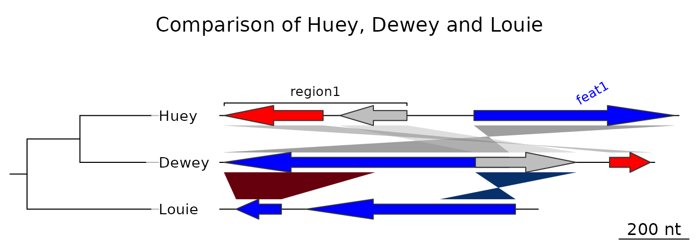
Getting help
A lot of examples and help are available in the main functions,
i.e. the reading functions (the various read_dna_seg_from*
and read_comparison_from* functions) and the main plotting
function, plot_gene_map().
Additionally, the web pages on R-forge and GitHub provide ways to get in touch with the genoPlotR community and to submit bugs and feature requests.
Objects in genoPlotR
This section will give an overview of the different types of R objects in genoPlotR.
dna_seg
A dna_seg object is a collection of genes or elements
along a genome, to be represented on a map.
dna_seg objects need to have 4 columns,
name, start, end and
strand. Extra columns with the names col,
fill, lty, lwd, pch,
cex, gene_type, and region_type
will be used in the plotting process. Other extra columns will be kept
in the object, but are not used.
names1 <- c("feat1", "feat2", "feat3")
starts1 <- c(2, 1000, 1050)
ends1 <- c(600, 800, 1345)
strands1 <- c("-", -1, 1)
cols1 <- c("blue", "grey", "red")
df1 <- data.frame(name = names1, start = starts1, end = ends1,
strand = strands1, col = cols1)
dna_seg1 <- dna_seg(df1)
str(dna_seg1)
#> Classes 'dna_seg', 'data.table' and 'data.frame': 3 obs. of 12 variables:
#> $ name : chr "feat1" "feat2" "feat3"
#> $ start : num 2 1000 1050
#> $ end : num 600 800 1345
#> $ strand : num -1 -1 1
#> $ col : chr "blue" "grey" "red"
#> $ gene_type : chr "arrows" "arrows" "arrows"
#> $ region_plot: chr "NA" "NA" "NA"
#> $ fill : chr "grey80" "grey80" "grey80"
#> $ lty : num 1 1 1
#> $ lwd : num 1 1 1
#> $ pch : num 8 8 8
#> $ cex : num 1 1 1
#> - attr(*, ".internal.selfref")=<externalptr>comparison
A comparison is a collection of similarities,
representing the comparison between two DNA segments.
Objects (data.frame, data.table, or
list) should have at least named elements
start1, end1, start2 and
end2. In addition, an optional col column can
be added, that will give the color of each comparison. Additional
numeric columns can be used for automatic color-coding (via
gradient_color_scheme()).
starts1 <- c(2, 1000, 1050)
ends1 <- c(600, 800, 1345)
starts2 <- c(50, 800, 1200)
ends2 <- c(900, 1100, 1322)
comparison1 <- as.comparison(data.frame(start1 = starts1, end1 = ends1,
start2 = starts2, end2 = ends2))
str(comparison1)
#> Classes 'comparison', 'data.table' and 'data.frame': 3 obs. of 5 variables:
#> $ start1 : num 2 1000 1050
#> $ end1 : num 600 800 1345
#> $ start2 : num 50 800 1200
#> $ end2 : num 900 1100 1322
#> $ direction: num 1 -1 1
#> - attr(*, ".internal.selfref")=<externalptr>annotation
An annotation object is used to annotate a DNA segment.
It has labels attached to positions. Each label can be attached to a
single position or to a range.
mid_pos <- middle(dna_segs[[1]])
annot1 <- annotation(x1 = mid_pos, text = dna_segs[[1]]$name)
str(annot1)
#> Classes 'annotation', 'data.table' and 'data.frame': 3 obs. of 5 variables:
#> $ x1 : num 301 900 1198
#> $ x2 : logi NA NA NA
#> $ text : chr "feat1" "feat2" "feat3"
#> $ color: chr "black" "black" "black"
#> $ rot : num 0 0 0
#> - attr(*, ".internal.selfref")=<externalptr>tree
A tree description in Newick format can be parsed using the
ade4 package.
tree <- ade4::newick2phylog("(((A_aaa:4.2,B_bbb:3.9):3.1,C_ccc:7.3):1);")
str(tree$leaves)
#> Named num [1:3] 4.2 3.9 7.3
#> - attr(*, "names")= chr [1:3] "A_aaa" "B_bbb" "C_ccc"
Reading data
DNA segments
Several formats can be read by genoPlotR to produce
dna_seg objects:
- GenBank files (
read_dna_seg_from_genbank()) - EMBL files (
read_dna_seg_from_embl()) - FASTA files (
read_dna_seg_from_fasta()) - PTT (protein table) files, tabular versions of GenBank files
(
read_dna_seg_from_ptt()) - User generated tabular files
(
read_dna_seg_from_tab())
The function read_dna_seg_from_file() is a wrapper
function, that will attempt to guess the correct format of the file.
The first three files are common biological formats and can be downloaded from major databases, such as the NCBI and the ENA. The definition of EMBL and GenBank files can be found here.
Comparisons
genoPlotR can read tabular files, either
user-generated tab files (read_comparison_from_tab()), or
from BLAST output (read_comparison_from_blast()). To
produce files that are readable by genoPlotR, BLAST+
commands should be run using the outfmt -6 or
outfmt -7 options.
Mauve output
The backbone output of the Mauve genome aligner
can be parsed using read_mauve_backbone() (Tested with
Mauve 2.3.1).
The function will return a list consisting of a list of
dna_seg objects and the corresponding
comparisons.
Plotting data
There is only one plotting function in genoPlotR,
plot_gene_map(). Many arguments are available, but here is
a list of the most important ones. Check the documentation for a more
thorough description.
dna_segs
A list of DNA segment objects.
comparisons
A list of comparisons. Should contain one element less than
dna_segs.
tree
A phylogenetic tree to be plotted at the left of the figure.
annotations
An annotation object, or a list of annotations. Will display annotations to the first, or to all DNA segments, respectively.
xlims
A list of even-numbered numeric vectors, giving the borders of
sub-segments to be plotted. The vector c(1,5000,8000,6000)
will display two sub-segments (1 to 5000 and 6000 to 8000), the second
being in reverse orientation.
main
A title to the plot.
scale
Should a scale be displayed at the bottom right of the plot?
dna_seg_scale
Allows to control the addition of scales to each segments. If simply
TRUE, will display a scale on each segment. If a vector, a
scale will be displayed for the corresponding TRUE
element.
global_color_scheme
Generate a new set of colors for the DNA segments and/ or comparisons.
plot_new
Turn off to avoid creating a new plot. Especially useful to integrate a genoPlotR plot in a larger figure.
Other useful functions
gradient_color_scheme() Makes a set of colors, either a
gray scale or shades of red and blue, that can then be applied to
comparisons.uniform_color_scheme() Applies a color scheme to
dna_segs and/ or comparisons.middle() Useful to get the middle of a gene, especially to
create annotations.auto_annotate() Automatically generates annotations from
dna_segs.edit_dna_segs() Uses a data frame to edit a list of
dna_segs. data() Type
data(package = "genoPlotR") to get the full list of
datasets.
Examples
This section gives step-by-step examples, of gradual complexity. The last one shows how to combine several plots and to annotate already generated plots.
For all examples, the first step is to load the library.
Example 1: A very simple example
The data used in this example is a dataset included in
genoPlotR, but for the sake of demonstration, it will
be recreated from scratch. To retrieve this dataset from the package,
use data(three_genes).
Data generation and a very simple plot
First, three dna_segs are generated, from data frames
with columns name, start, end,
strand and col.
df1 <- data.frame(name = c("feat1", "feat2", "feat3"),
start = c(2, 1000, 1050),
end = c(600, 800, 1345),
strand = c(-1, -1, 1),
col = c("blue", "grey", "red"))
dna_seg1 <- dna_seg(df1)
df2 <- data.frame(name = c("feat1", "feat2", "feat3"),
start = c(50, 800, 1200),
end = c(900, 1100, 1322),
strand = c(-1, 1, 1),
col = c("blue", "grey", "red"))
dna_seg2 <- dna_seg(df2)
df3 <- data.frame(name = c("feat1", "feat2", "feat3"),
start = c(1899, 2108, 2803),
end = c(2034, 2732, 3620),
strand = c(-1, -1, 1),
col = rep("blue", 3))
dna_seg3 <- dna_seg(df3)
dna_segs <- list(dna_seg1, dna_seg2, dna_seg3)Then, create two comparison objects from data frames
with columns start1, end1,
start2, end2 and col. In the
first comparison, the starts and ends correspond to the genes created
above.
df4 <- data.frame(start1 = dna_seg1$start,
end1 = dna_seg1$end,
start2 = dna_seg2$start,
end2 = dna_seg2$end)
comparison1 <- comparison(df4)
df5 <- data.frame(start1 = c(50, 800),
end1 = c(500, 1100),
start2 = c(1899, 2732),
end2 = c(2034, 2508),
col = c("#67000D", "#08306B"))
comparison2 <- comparison(df5)
comparisons <- list(comparison1, comparison2)This constitutes all the material required to create a basic plot.
plot_gene_map(dna_segs = dna_segs, comparisons = comparisons)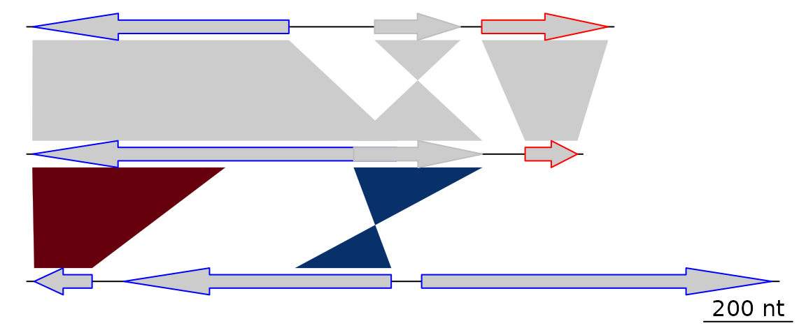
A more elaborate plot
Many options can be added to this simple plot. To start, the first
comparison will be colored in grey scale, using an arbitrary scale
passed to the function gradient_color_scheme().
comparisons[[1]]$col <- gradient_color_scheme(c(0.6, 0.4, 0.5), "grey")Second, names and a phylogenetic tree are prepared. The function
newick2phylog() from the package ade4 is used
to prepare an object suitable for genoPlotR. The
elements of the list of dna_segs must be named and
correspond to the labels of the tree object, to avoid confusion.
names <- c("Huey", "Dewey", "Louie")
names(dna_segs) <- names
tree_HDL <- ade4::newick2phylog("(((Huey:4.2,Dewey:3.9):3.1,Louie:7.3):1);")Third, annotations to the first segment are added. The first gene is
annotated in its middle (thus the use of the middle()
function), while a region comprising the second and third gene are
annotated with a square bracket. Note the use of a numeric value for
x1 and NA for the first gene, and the use of
two numeric values for the second region.
mid_pos <- middle(dna_segs[[1]])
annot <- annotation(x1 = c(mid_pos[1], dna_segs[[1]]$end[2]),
x2 = c(NA, dna_segs[[1]]$end[3]),
text = c(dna_segs[[1]]$name[1], "region1"),
rot = c(30, 0),
col = c("grey", "black"))Finally, the plot is drawn, adding a title, allowing 2 inches for the
tree width, and changing the annotation space to 1.3 lines. The
different options can be checked by removing/adding the different
arguments to plot_gene_map().
plot_gene_map(dna_segs = dna_segs, comparisons = comparisons,
annotations = annot, annotation_height = 1.3,
tree = tree_HDL, tree_width = 2,
main = "Comparison of Huey, Dewey and Louie")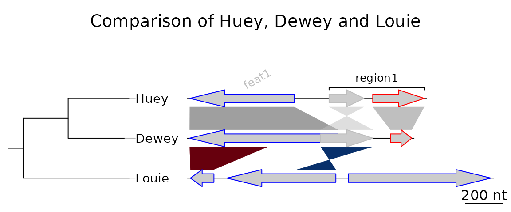
To explore the different options, new windows can be opened by using
x11() or window(), depending on the OS, or
saved to files using for example png() or
pdf(). To finish the plot, the function
dev.off() should be called.
The plot can be saved to a file by first adding a call to one of the
graphical device functions of R
(e.g. pdf(), png(), jpeg()), then
making the call(s) to plot_gene_map(), and finally the
function dev.off().
Example 2: Generating data online
This section will give an example of how data can be retrieved and generated online, using the resources available at the NCBI. This example was devised on 5/3/2010, and given the relatively rapid rate of changes in public databases, it is possible that part or all of this example becomes obsolete. Please contact the author of this document (lionel.guy@ebc.uu.se) in such a case.
In this example, the genomes of Bartonella henselae (RefSeq accession NC_005956) and Bartonella quintana (RefSeq accession NC_005955) will be compared.
Retrieving dna_seg data
To retrieve GenBank files, the NCBI Nucleotide Database can be directly queried, provided that the accession number is known. In such a case, the database can be accessed from the home page of NCBI, by entering the accession number (e.g. NC_005956) in the search field and by selecting “Nucleotide” as the database. The GenBank file is then displayed. It can be saved in a suitable format by clicking on “Send to:”, selecting “Complete Record” and “File”, and selecting “GenBank (full)” as the format.
If the accession number is unknown, the NCBI genome database can be queried for the name of the organism. From the list of assemblies, a GenBank format file can be downloaded by selecting “Download” from the “Action” column, and selecting the “Sequence and annotation (GBFF)” file type.
Do this for both NC_005956 and NC_005955.
Performing web-based BLAST and retrieving result
The two previously retrieved genomes can be compared with BLAST,
which can be done locally or online. The online version of BLAST can be
found on the NCBI website here. From there,
the genomes can be aligned by entering NC_005956 as the
query sequence, selecting “Align two or more sequences”, and then
entering NC_005955 as the subject sequence. The other
arguments to BLAST can then be modified at will to suit the needs of the
comparison. Once the BLAST search is run, the hit table (which can be
read by genoPlotR) can be downloaded by clicking on
“Download” and then “Hit Table(text)” in the result page.
If BLAST+ is installed locally and findable by R, then you can do
this from within R. The function
comparisons_from_dna_segs() makes a list of
comparisons by running BLAST first, and making FASTA files
from GenBank files as necessary. Alternatively, DIAMOND can be chosen as
well using the argument tool = "diamond".
BH_vs_BQ <- comparisons_from_dna_segs(files = c("NC_005956.gb", "NC_005955.gb"),
tool = "blast", algorithm = "blastn")Plotting
Provided that the GenBank files and their comparison have been saved under the correct names in the directory where R was started, they can be parsed directly by genoPlotR.
BH <- read_dna_seg_from_file("NC_005956.gb")
BQ <- read_dna_seg_from_file("NC_005955.gb")
BH_vs_BQ <- read_comparison_from_blast("NC_005956_NC_005955")Alternatively, data(barto) contains
dna_segs made from these two genomes, as well as a
comparison that was made from BLAST results.
data(barto)
BH <- barto$dna_segs[[3]]
BQ <- barto$dna_segs[[4]]
BH_vs_BQ <- barto$comparisons[[3]]The data can now be plotted, using the xlims argument to
plot only the first 50,000 base pairs.
xlims <- list(c(1,50000), c(1,50000))
plot_gene_map(dna_segs = list(BH, BQ),
comparisons = list(BH_vs_BQ),
dna_seg_labels = c("BH", "BQ"),
xlims = xlims,
main = "BH vs BQ, comparison of the first 50 kb",
gene_type = "side_blocks",
alpha_comparisons = 0.5,
global_color_scheme = "gradient",
dna_seg_scale = TRUE, scale = FALSE)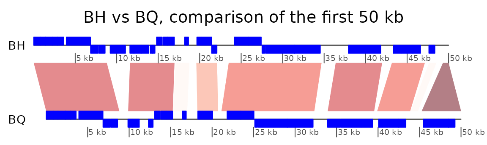
Example 3: Mauve alignment of four Bartonella genomes
genoPlotR is able to parse the backbone file produced by Mauve (for details on the format, see https://darlinglab.org/mauve/user-guide/files.html).
The elements of the DNA segments are no longer genes, but Mauve
blocks. Similarly, the comparison reflects the correspondences between
these blocks. The strand indicates the orientation of the block with
respect to a reference, which by default is the first genome in the
comparison. A single list is returned, which contains two lists, one
containing the dna_segs and the other one the
comparisons.
The genomes in the backbone file are not named, so it is advised to be cautious in the order of the names given.
In this example, 4 genomes of Bartonella have been compared
with Mauve 2.3.1. The smaller blocks (smaller than 10 kb) are filtered
out, and the second genome (which is the largest) is taken as the
reference. The dataset can also be accessed in the package by running
data(mauve_bbone).
bbone_file <- system.file('extdata/barto.backbone', package = 'genoPlotR')
bbone <- read_mauve_backbone(bbone_file, ref = 2, filter_low = 10000)
names <- c("B_bacilliformis", "B_grahamii", "B_henselae", "B_quintana")
names(bbone$dna_segs) <- namesThe lengths of the comparisons can be calculated by adding the length on both sides of the comparisons.
By adding global_color_scheme = "gradient" and
color_scheme_column = "length" Now plotting, using
global_color_scheme() to color the segments according to
their lengths.
for (i in 1:length(bbone$comparisons)) {
cmp <- bbone$comparisons[[i]]
bbone$comparisons[[i]]$length <-
abs(cmp$end1 - cmp$start1) + abs(cmp$end2 - cmp$start2)
}We can then color the comparisons based on these calculated lengths
using the global_color_scheme and
color_scheme_column arguments.
plot_gene_map(dna_segs = bbone$dna_segs,
comparisons = bbone$comparisons,
global_color_scheme = c("length", "increasing", "red_blue", 0.7),
override_color_schemes = TRUE)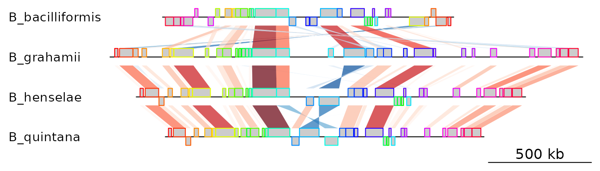
Example 4: Several sub-segments of four Bartonella genomes
This examples presents how to use the xlims argument to
represent several sub-segments of the same segment, and how to show them
in a reverse orientation.
The data used here is also a comparison between four
Bartonella genomes (see above), but the comparison has been
performed using BLAST. The dataset is available in the package
(data(barto)).
First, the data is loaded and a tree is created.
data(barto)
tree_barto <- ade4::newick2phylog("(BB:2.5,(BG:1.8,(BH:1,BQ:0.8):1.9):3);")The xlims argument is then created. It is a list with as
many elements as there are dna_segs. Each element is an
even-numbered numeric vector, containing the left and right border of
each sub-segment, consecutively. In the first DNA segment, two
sub-segments are shown: between 1,415,000 and 1,445,000 in a reverse
orientation, and between 1,380,000 and 1,412,000, in “normal”
orientation. In the remaining DNA segments, 3, 3, and 1 subsegments are
shown, respectively, all in normal orientation.
xlims <- list(c(1445000, 1415000, 1380000, 1412000),
c( 10000, 45000, 50000, 83000, 90000, 120000),
c( 15000, 36000, 90000, 120000, 74000, 98000),
c( 5000, 82000))To complete the example, annotations are added. Genes that have a
gene name (i.e. these for which the name is not the locus or synonym
name) are used to annotate the segment. Only every fourth gene is
annotated, to avoid overlapping the tags. The function
middle() is used to retrieve the middle of each element of
the DNA segments.
annots <- lapply(barto$dna_segs, function(x) {
mid <- middle(x)
annot <- annotation(x1 = mid, text = x$name, rot = 30)
idx <- grep("^[^B]", annot$text, perl = TRUE)
annot[idx[idx %% 4 == 0], ]
})Finally, plot the result, using scales on each DNA segment, adding a title, and not limiting the plotting area to the longest segment, to allow for a better placement of the sub-segments.
plot_gene_map(barto$dna_segs, barto$comparisons, tree = tree_barto,
annotations = annots,
xlims = xlims,
limit_to_longest_dna_seg = FALSE,
dna_seg_scale = TRUE, scale = FALSE,
main = "Comparison of homologous segments in 4 Bartonella genomes")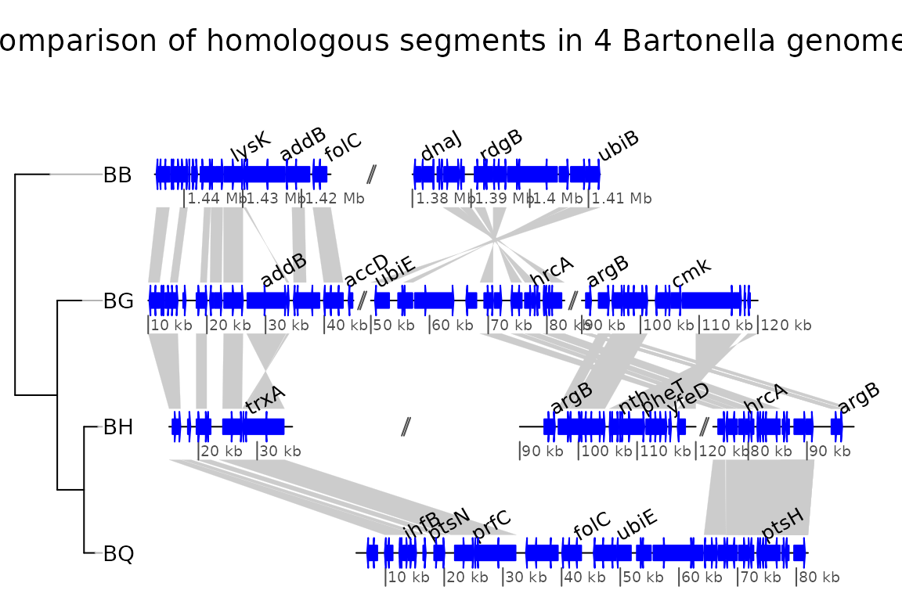
Example 5: Two segments of the Y chromsome in human and chimp
In this example, the ability to plot introns and exons is demonstrated.
First, data is loaded. The dataset included in the package is used, but any GenBank file containing introns and exons can be used. Some annotations are added: for each segment, the range of each gene is calculated, and corresponding annotations are created.
data(chrY_subseg)
genes_homo <- unique(chrY_subseg$dna_segs[[1]]$gene)
x_homo <- sapply(genes_homo, function(x)
range(chrY_subseg$dna_segs[[1]]
[chrY_subseg$dna_segs[[1]]$gene == x,])
)
annot_homo <- annotation(x1 = x_homo[1,], x2 = x_homo[2,],
text = dimnames(x_homo)[[2]])
genes_pan <- unique(chrY_subseg$dna_segs[[2]]$gene)
x_pan <- sapply(genes_pan, function(x)
range(chrY_subseg$dna_segs[[2]]
[chrY_subseg$dna_segs[[2]]$gene == x,])
)
annot_pan <- annotation(x1 = x_pan[1,], x2 = x_pan[2,],
text = dimnames(x_pan)[[2]])The segments can be directly plotted, passing the annotations as a list.
main <- "Comparison of two subsegments in H. sapiens and P. troglodytes"
plot_gene_map(chrY_subseg$dna_segs, chrY_subseg$comparison,
annotations = list(annot_homo, annot_pan),
dna_seg_scale = TRUE,
main = main,
scale = FALSE)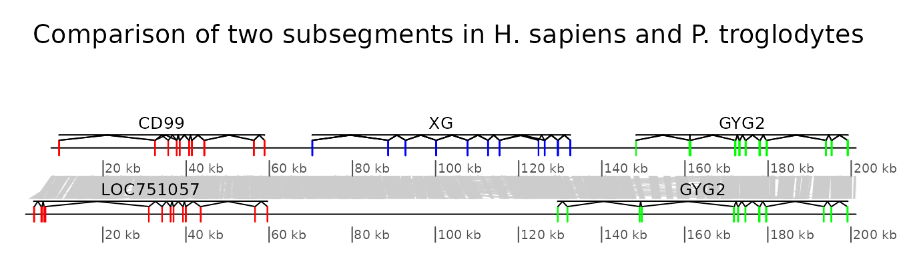
Example 6: Combining several genoPlotR figures and annotating the figure
In this example, some of the previous plots are combined in a single,
multi-panel figure. Using the tools present in the grid
package, the plot is annotated further. More information is available in
the documentation of the grid package.
The example here uses R objects built in the previous examples, which should thus be run first.
First, a viewport that will contain all plots is pushed
in a new page. The plot is divided in three rows, of relative heights 1,
1.3 and 0.8.
pushViewport(viewport(
layout = grid.layout(3, 1,
heights = unit(c(1,1.3,0.8), rep("null", 3))),
name = "overall_vp"))The three panels A to C, containing the result of the above examples
4 to 6 are pushed into viewports, calling upViewport()
after each plot to come back to the main viewport. After the last plot,
upViewport(0) is called to go up 2 viewports, coming back
to the root viewport. Each time, the argument
plot_new = FALSE is used, to avoid plotting in a new page
every single panel.
## Panel A
pushViewport(viewport(layout.pos.row = 1, name = "panelA"))
plot_gene_map(dna_segs = bbone$dna_segs,
comparisons = bbone$comparisons,
dna_seg_scale = c(FALSE, FALSE, FALSE, TRUE),
scale = FALSE,
main = "A", main_pos = "left",
plot_new = FALSE)
upViewport()
## Panel B
pushViewport(viewport(layout.pos.row = 2, name = "panelB"))
plot_gene_map(barto$dna_segs, barto$comparisons,
annotations = annots,
tree = tree_barto,
xlims = xlims,
limit_to_longest_dna_seg = FALSE,
scale = FALSE,
dna_seg_scale = TRUE,
main = "B", main_pos = "left",
annotation_height = 0.6, annotation_cex = 0.5,
plot_new = FALSE)
upViewport()
## Panel C
pushViewport(viewport(layout.pos.row = 3, name = "panelC"))
plot_gene_map(chrY_subseg$dna_segs, chrY_subseg$comparison,
annotations = list(annot_homo, annot_pan),
dna_seg_scale = TRUE, scale = FALSE,
main = "C", main_pos = "left",
plot_new = FALSE)
upViewport(0)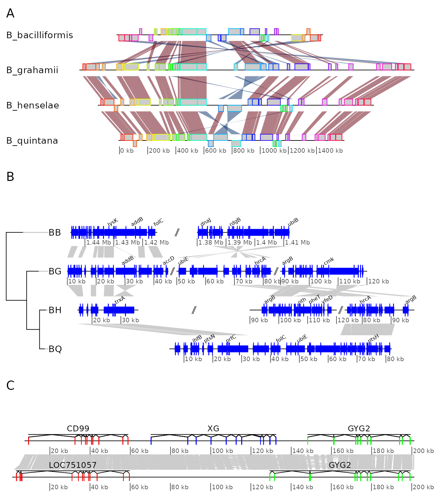
The functions current.vpTree() and
grid.ls() can be used to see the current viewport
structure, and to see all object names.
grid_list <- grid.ls(grob = TRUE, viewports = TRUE, print = FALSE)
str(grid_list)
current.vpTree()#> List of 6
#> $ name : chr [1:1334] "ROOT" "overall_vp" "panelA" "oma" ...
#> $ gDepth : num [1:1334] 0 0 0 0 0 0 0 0 0 0 ...
#> $ vpDepth: num [1:1334] 0 1 2 3 4 5 6 6 5 6 ...
#> $ gPath : chr [1:1334] "" "" "" "" ...
#> $ vpPath : chr [1:1334] "" "ROOT" "ROOT::overall_vp" "ROOT::overall_vp::panelA" ...
#> $ type : chr [1:1334] "vpListing" "vpListing" "vpListing" "vpListing" ...
#> - attr(*, "class")= chr "flatGridListing"
#> viewport[ROOT]->(viewport[overall_vp]->(viewport[panelA]->(viewport[oma]->(viewport[oma_layout]->(viewport[main], viewport[frame]->(viewport[tree_outer]->(viewport[tree]->(viewport[labels])), viewport[plotarea_outer]->(viewport[plotarea]->(viewport[map]->(viewport[comparison.1], viewport[comparison.2], viewport[comparison.3], viewport[seg_plot.1], viewport[seg_plot.2], viewport[seg_plot.3], viewport[seg_plot.4], viewport[scale_and_dna_seg.1]->(viewport[dna_seg.1.1]), viewport[scale_and_dna_seg.2]->(viewport[dna_seg.2.1]), viewport[scale_and_dna_seg.3]->(viewport[dna_seg.3.1]), viewport[scale_and_dna_seg.4]->(viewport[dna_seg_scale.4.1], viewport[dna_seg.4.1])))))))), viewport[panelB]->(viewport[oma]->(viewport[oma_layout]->(viewport[main], viewport[frame]->(viewport[tree_outer]->(viewport[tree]->(viewport[treeFrame]->(viewport[GRID.VP.13]->(viewport[GRID.VP.14]->(viewport[tree.branches]), viewport[GRID.VP.15]->(viewport[tree.labels]))))), viewport[plotarea_outer]->(viewport[plotarea]->(viewport[map]->(viewport[comparison.1], viewport[comparison.2], viewport[comparison.3], viewport[seg_plot.1], viewport[seg_plot.2], viewport[seg_plot.3], viewport[seg_plot.4], viewport[scale_and_dna_seg.1]->(viewport[dna_seg_scale.1.1], viewport[dna_seg_scale.1.2], viewport[dna_seg.1.1], viewport[annotation.1.1], viewport[gap.1.2], viewport[dna_seg.1.2], viewport[annotation.1.2]), viewport[scale_and_dna_seg.2]->(viewport[gap.2.2], viewport[gap.2.3], viewport[dna_seg_scale.2.1], viewport[dna_seg_scale.2.2], viewport[dna_seg_scale.2.3], viewport[dna_seg.2.1], viewport[dna_seg.2.2], viewport[dna_seg.2.3], viewport[annotation.2.1], viewport[annotation.2.2], viewport[annotation.2.3]), viewport[scale_and_dna_seg.3]->(viewport[gap.3.2], viewport[gap.3.3], viewport[dna_seg_scale.3.1], viewport[dna_seg_scale.3.2], viewport[dna_seg_scale.3.3], viewport[dna_seg.3.1], viewport[annotation.3.1], viewport[dna_seg.3.2], viewport[annotation.3.2], viewport[dna_seg.3.3], viewport[annotation.3.3]), viewport[scale_and_dna_seg.4]->(viewport[annotation.4.1], viewport[dna_seg_scale.4.1], viewport[dna_seg.4.1])))))))), viewport[panelC]->(viewport[oma]->(viewport[oma_layout]->(viewport[main], viewport[frame]->(viewport[plotarea_outer]->(viewport[plotarea]->(viewport[map]->(viewport[comparison.1], viewport[seg_plot.1], viewport[seg_plot.2], viewport[scale_and_dna_seg.1]->(viewport[dna_seg_scale.1.1], viewport[dna_seg.1.1], viewport[annotation.1.1]), viewport[scale_and_dna_seg.2]->(viewport[dna_seg_scale.2.1], viewport[dna_seg.2.1], viewport[annotation.2.1]))))))))))Despite the complexity of the viewport structure, it is possible to
identify the previously defined panel A, B and C. Using the
downViewport() function, it will be possible to find and
modify elements of the plots.
First, the labels of panel A will be modified to have the names in
italics and to replace the underscores by a dot and a space. The second
label is also removed. Note the use of grid.edit() and
grid.remove().
Second, a red rectangle will be placed around one subsegment of panel B.
The plot is shown before and after these 2 edits.
downViewport("panelA")
for (i in 1:length(names)) {
new_label <- sub("_", ". ", names[[i]])
grid.edit(paste("label", i, sep = "."),
label = new_label,
gp = gpar(fontface = "italic"),
redraw = FALSE)
}
grid.remove("label.2")
upViewport(0)
downViewport("panelB")
downViewport("dna_seg.3.2")
grid.rect(height = unit(2.2, "npc"), gp = gpar(col = "red", lwd = 2, fill = 0))
upViewport(0)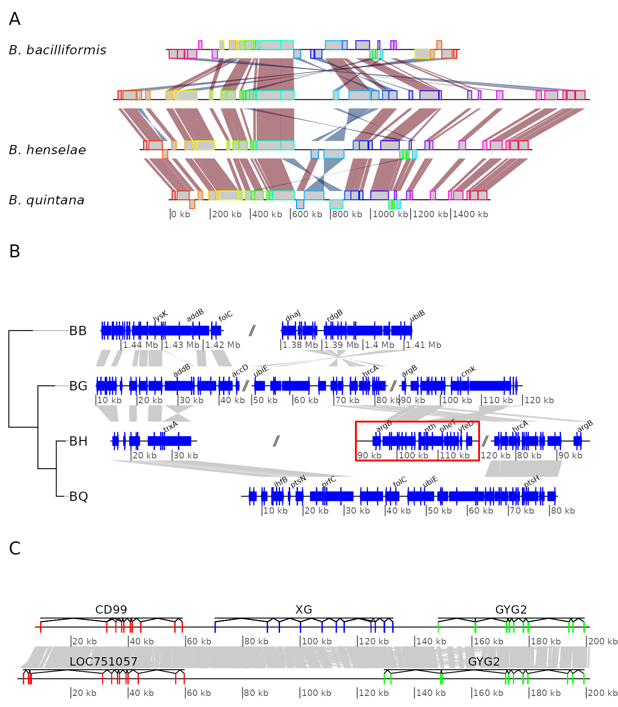
Example 7: Using user-defined gene_type and seg_plot
In this example, the use of personalized gene_types and
of seg_plots to show data next to DNA segments is
demonstrated. The same data as in example 4 is used.
A graphical function is defined, to represent triangles instead of
arrows for genes. The triangles are oriented in function of their strand
and the transparency is set differently according to a length cut-off,
passed with the function. As required, the function has only two
arguments, a gene which is a row of a dna_seg,
and the dots (...). Any extra argument passed to
plot_gene_map() will be passed in turn to the
gene_type-defining function.
starGrob <- function(gene, ...) {
## Coordinates for the star
x <- sin(((0:5) / 2.5) * pi) * (gene$end - gene$start) / 2 + (gene$end + gene$start) / 2
y <- cos(((0:5) / 2.5) * pi) * gene$strand * 0.5 + 0.5
idx <- c(1, 3, 5, 2, 4, 1)
## Attribute line_col only if present in the gene
line_col <- if (!is.null(gene$line_col)) gene$line_col else gene$col
## Having a conditional transparency, depending on a length cut-off
## passed via dots
length_cutoff <- list(...)$length_cutoff
if (!is.null(length_cutoff)) {
alpha <- if ((gene$end-gene$start) < length_cutoff) 0.3 else 0.8
} else {
alpha <- 1
}
## Grobs
g <- polygonGrob(x[idx], y[idx],
gp = gpar(fill = gene$col, col = line_col,
lty = gene$lty, lwd = gene$lwd, alpha = alpha),
default.units = "native")
t <- textGrob(label = "***",
x = (gene$end+gene$start) / 2,
y = 0.5,
default.units = "native")
gList(g, t)
}To make use of that, the gene_type column of the
dna_segs must be replaced. To make use of the supplementary
argument line_col, a column is added to the
dna_seg object. Finally, plot the result.
barto$dna_segs[[2]]$gene_type <- "starGrob"
barto$dna_segs[[4]]$gene_type <- "starGrob"
line_col <- rep(1:20, (nrow(barto$dna_segs[[3]]) %% 20) + 1)
barto$dna_segs[[2]]$line_col <- line_col[1:nrow(barto$dna_segs[[2]])]
plot_gene_map(barto$dna_segs, barto$comparisons,
tree = tree_barto,
annotations = annots,
xlims = xlims,
dna_seg_scale = TRUE,
length_cutoff = 600,
annotation_height = 0.3)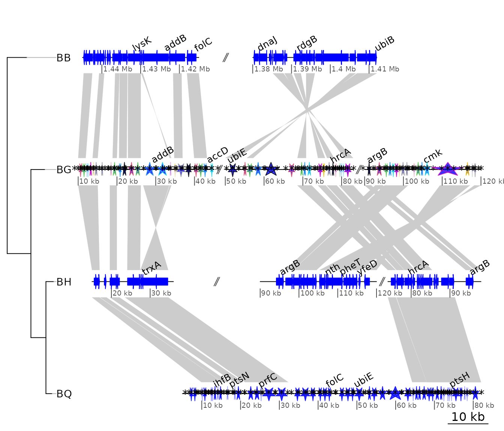
Now, let’s plot some random data along with the DNA segment. A
standard grid function returning a grob is used, but it is
possible to use personalized functions, as long as they return
grob or gList objects. For example, the
function starGrob() defined in the previous exercise could
be modified to be used here.
The seg_plot objects are first defined, with the
following structure:
seg_plots <- lapply(barto$dna_segs, function(ds) {
x <- seq(1, range(ds)[2], by = 1000)
y <- jitter(seq(100, 300, length = length(x)), amount = 50)
seg_plot(func = linesGrob, args = list(x = x, y = y,
gp = gpar(col = grey(0.3), lty = 2)))
})
str(seg_plots[[1]])
#> List of 5
#> $ func :function (x = unit(c(0, 1), "npc"), y = unit(c(0, 1), "npc"), default.units = "npc",
#> arrow = NULL, name = NULL, gp = gpar(), vp = NULL)
#> $ args :List of 4
#> ..$ x : num [1:1445] 1 1001 2001 3001 4001 ...
#> ..$ y : num [1:1445] 58.1 133.6 110.4 66.1 51.3 ...
#> ..$ gp :List of 2
#> .. ..$ col: chr "#4D4D4D"
#> .. ..$ lty: num 2
#> .. ..- attr(*, "class")= chr "gpar"
#> ..$ default.units: chr "native"
#> $ xargs: chr [1:5] "x" "x0" "x1" "x2" ...
#> $ yargs: chr [1:5] "y" "y0" "y1" "y2" ...
#> $ ylim : NULL
#> - attr(*, "class")= chr [1:2] "seg_plot" "list"Each seg_plot element has a func argument,
giving the function to use to plot the data, here the grid
function linesGrob(). The arguments that are passed to this
function are contained in the args argument, a list. Notice
the use of gp = gpar(...).
The result can then be plotted, and modulated using the arguments
seg_plot_height, seg_plot_height_unit,
seg_plot_yaxis, and seg_plot_yaxis_cex.
plot_gene_map(barto$dna_segs, barto$comparisons, tree = tree_barto,
annotations = annots,
xlims = xlims,
seg_plots = seg_plots,
seg_plot_height = 0.5,
seg_plot_height_unit = "null",
seg_plot_yaxis = 2,
seg_plot_yaxis_cex = 0.7)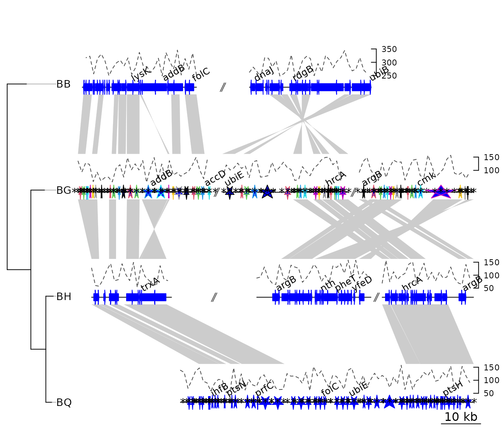